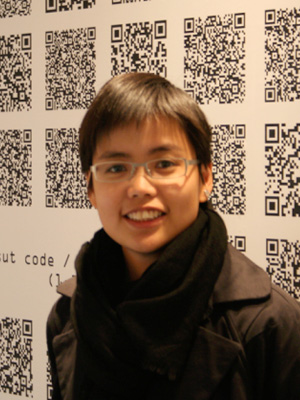

About
PCD @ Aarhus 2019 is organised by:
Nathalia Novais, Tobias Stenberg Christensen, Winnie Soon & Anders Visti
Winnie Soon
www.siusoon.net
rwx@siusoon.net
Anders Visti
https://andersvisti.dk
andersvisti@gmail.com
+45 60 63 02 84
People
Winnie SoonWinnie (artist-researcher). Winnie Soon is an artist-researcher who resides in Hong Kong and Denmark. Her works explore themes/concepts around digital culture, specifically concerning internet censorship, data circulation, real-time processing, infrastructure and the culture of code practice. Winnie’s projects have been exhibited and presented internationally at museums, festivals, universities and conferences across Europe, Asia and America. Her current research focuses on exploratory and aesthetic programming, working on two books titled “Aesthetic Programming” (with Geoff Cox) and “Fix My Code” (with Cornelia Sollfrank). She is Assistant Professor at Aarhus University. More info: http://www.siusoon.net